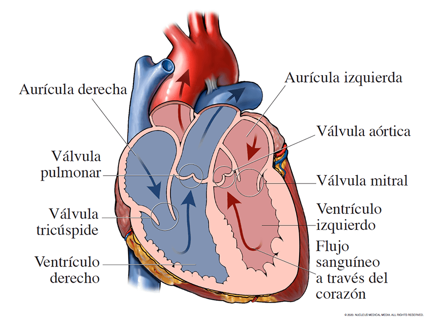

|
Los corazones para transplantes o corazones artificiales poseen ciertas cosas en similitud las características más destacadas de este dispositivo es que es capaz de detectar la presión arterial y de controlar el flujo sanguíneo en tiempo real a través de un algoritmo. |

|